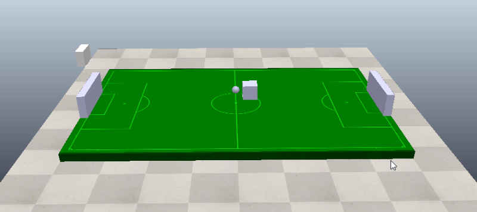

Onshape <<
Previous Next >> CoppeliaSim
Practice
練習1: 請各分組製作一個 Web-based 網誌與簡報, 該如何利用隨身碟、 Replit 與 Codespaces 中維護個人與分組的網站內容?
練習2: 請各分組製作一個 Web-based 網誌與簡報, 說明如何在 CoppeliaSim 環境中, 利用 IPv6 ZeroMQ Remote API Python 進行兩個自由度的鋼球平衡檯自動控制系統模擬?
練習3: 建立 foot_basket_ball 模擬場景
延續 cd2023 的足球競技模擬場景檔案: cd2023_pj3_football_field_specification_ttt.7z (需要密碼)
產品設計不是一項簡單的事, 尤其當設計的目的, 是希望建構一套可以永續且韌性較強的組成, 而非單單只想得到能應付當下需求的內容.
以 cd2024 的分組協同期末專案而言, 可以在上列 cd2023 課程中的場景加以延伸, 其中將碰到以下議題:
- 附加的零組件要採用何種套件製作, 當團隊選擇一項 MCAD(Mechanical Computer Aided Design, 電腦輔助設計) 套件後, 隨即便產生, 協同團隊成員是否都能使用所選擇的套件? 各成員所使用同一套件的不同版本進行零組件繪圖, 之後的協同流程會不會產生問題?
- 當零件在各協同成員的 MCAD 套件中進行繪圖, 是否使用相同的單位尺寸設定? 各零組件選擇不同的絕對與相對座標系統, 對於接下來在不同套件間的轉檔, 會不會產生問題, 或者讓協同設計流程更加繁瑣?
- 從 MCAD 將零組件轉出時, 各成員即便選擇了相同的輸出(Export)檔案格式, 不同的轉檔格式疏密度, 對於後續的零組件應用有沒有影響?
- 當零組件轉入機電模擬系統時, 將牽涉到輸入(Import)縮放比例, 以及各零件轉入後的絕對與相對座標選擇, 不同的選擇會不會對後續的動態模擬系統設定造成一定的影響?尤其過程中牽涉開放機構(Open-chain) 與封閉(Closed-chain)機構組件時, 選擇不同的零組件絕對與區域座標系統之後, 會不會對之後的機構連桿運動設定造成問題?
- 而最後, 當所需要的基本場景已經建立完成, 由於客戶或機電整合流程的配合需求, 必須改變特定零件的組立架構, 或是零組件的參數尺寸, 前面的所有步驟都需要重來一次嗎?
- 以下是在面對上列諸多議題時, 以 Solvespace 建立一塊籃球板, 然後正設法放置到規定位置的參考場景檔案: cd2024_footbasket_ball_spec_add_slvs_board.7z

操作過程如下:
- 開啟 Solvespace, 確認作圖單位為 mm, 繪製一個 100mmx200mmx300mm 的方塊零件, 準備最為籃球板.
- 由於 CoppeliaSim 內定的場景地面座標為 X-Y, 因此若在 Solvespace 中建立零件, 必須要確定零件的局部座標系與絕對坐標系的關係.
- 由於開啟 cd2023 模擬場景後, 發現所有的零件都以其自身的局域坐標系原點, 放在零件的正中央, 因此若將零件轉入 CoppeliaSim 後, 希望精確掌握零件的定位, 則在繪製零件草圖時, 必須設定好輪廓與絕對座標系統之間的關係.
- 另外, 由於 CoppeliaSim 4.5.1 版會將所有的轉入零件採同一個座標原點, 而非如舊版本轉入後各自以其局部座標系統進行定位.
- 而且還必須了解 CoppeliaSim 內建的尺寸單位為 m, 目前 Solvespace 轉出的製圖單位則是 mm, 因此中間差別了 1000 倍, 所以將作圖單位設為 mm 的 Solvespace 零件, 轉入 CoppeliaSim 若要使用其原先的作圖尺寸, 則必須縮小 0.001 倍.
- 之後, 還必須利用 Edit -> Shape reference frame -> Relocate to mesh center 將各零件的參考座標系統原點, 從廣域座標系原點, 轉換到零件個別的物件中心原點.
- 若零件轉入 CoppeliaSim 時選擇 Z 軸向上, 則籃球板零件轉入後, 將平躺在場景中, 若要轉至與現有的足球門相同方位, 則必須分別對自己的 X 軸與 Y 軸個旋轉 90 度.
- 最後再任選一座球門的 X, Y 座標系統原點位置(position), 逐步將 basketball board 放到正確的位置, 結果如: cd2024_footbasket_ball_spec_add_slvs_board.7z
協同零組件繪圖: Onshape
協同分組報告: LaTeX -> pdf
Onshape <<
Previous Next >> CoppeliaSim